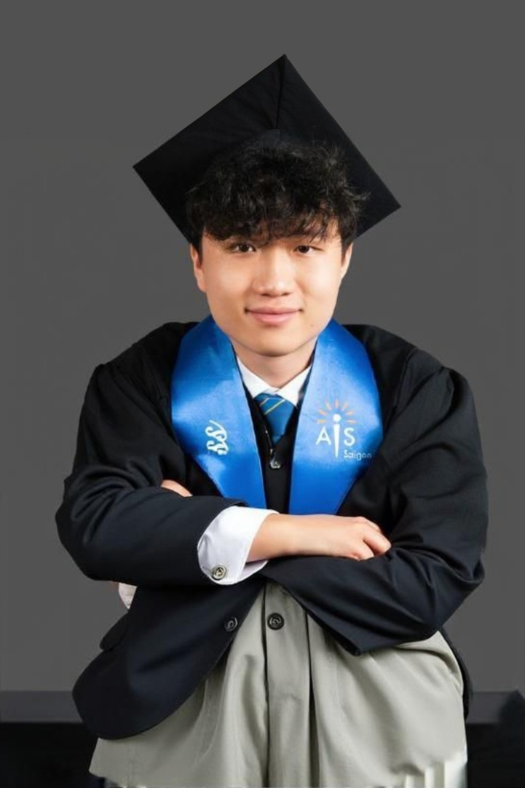

I explore market trends, investment strategies, and global economic issues to develop practical, data-driven solutions in business and finance.
Hi! I'm someone who loves learning, solving problems, and turning ideas into action. I enjoy taking on challenges, whether it's working on creative projects or improving myself through new experiences.
I value adaptability, teamwork, and meaningful progress. Outside of academics or work, I enjoy staying active, exploring new interests, and connecting with others.
Right now, I’m focused on preparing for the next big chapter—university. I’ve been reflecting a lot on what I can control: my effort, my learning, and my attitude.
After a big transition in school, I’ve learned to stay calm in uncertainty, embrace new environments, and make the most of every opportunity. I’m exploring new passions, growing from past experiences, and getting ready for whatever comes next.